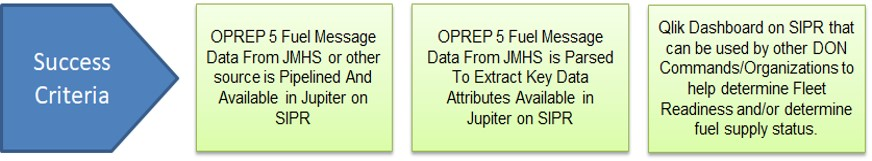
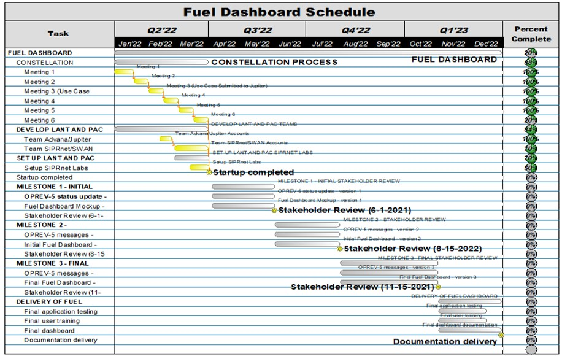

Welcome to the Information Intelligence
Executive Fuel Dashboard Landing Page!
« Dats Home Page
Project Objective
The Fuel Readiness Dashboard will visualize fuel data across the Navy Fleet, with fuel supply, demands, and shortages filterable by ship, TYCOM, and Combatant Commands
Capability similar to the COVID-19 PPE Dashboard and can be used by other DON Commands/Organizations to help determine Fleet Readiness and/or determine fuel supply status
Dashboard will provide a unit-level report of fuel levels married to DLA Shore Fuel availability
Data Engineering will result in a pipeline and data model of DLA and Fuel Messaging data in Jupiter that will be available for DON
- OPREP-5 Fuel Messaging data from JMHS or other sources
- Raw Fuel Messaging data parsed to extract key required data elements

Project Schedule

Accomplishments
Identified primary data sources and pipeline ingest requirements for on hand fuel data (OPREP 5 via C20IX) and ashore fuel data sources (DLA EBS/FMD)
Identified ongoing efforts to reduce redevelopment work
- Utilizes the OPREP 5 parser developed by C2X lab
- Consumes OPREP 5 messages from the Hermes centralized messaging effort
Iteratively developed Jupiter use case documentation (submitted 29 Jan 2022; approved 29 Mar 2022)
Built a network of fuel SMEs from DLA, Jupiter, Carderock, etc.
Received, hosted, and analyzed initial draft of C2X OPREP 5 Fuel Parser
Select team members with SIPR access have analyzed OPREP 5 messages
Conducted 5 Constellation Events to define project scope and success criteria
Produced and iteratively updated data flow / CONOPS diagrams
Produced Work Breakdown Structure of Data Engineering and Data Analytics Initiatives and Epics, and initial backlog of tasks
Implemented dedicated JIRA project to facilitate project engineering and development via agile scrum methodology (Sprints)
Integrated Spencer Wilder into the Hermes team, with access to the Hermes NIPR clusters and code base
Received a data dictionary detailing Hermes output
Next Steps
Finish dashboard mockups
Gain product owner concurrence on dashboard mockups
Begin visualization development
Begin implementing C2X parser in Jupiter SIPR environment
Identify authoritative source of Ship Master Data, Fuel Facilities Master Data
Work with Advana/Jupiter team to design a pipeline to ingest DLA data from Advana
Build and ensure team access to the Fuel Dashboard architecture in Jupiter
Risks & Mitigations
Accuracy of OPREP5 Messages
- Mitigation: Provide end user capability to read messages; Provide statistics on accuracy of messages
C2X Parser Implementation and Declassification
- Mitigation: Collaborate closely with C2X authors; allow enough time for declassification of code on high side and plan to have scheduled drops in order to dial in process
Accuracy of C2X Parser
- Mitigation: Test driven development
Timeline for Hermes Implementation in Jupiter
- Mitigation: Get representative data to feed development
SIPR Jupiter Architecture Buildout
- Mitigation: Continue to work on low side to understand requirements; use Case approved, continue working with Jupiter
© PEO MLB Data Transformation Services